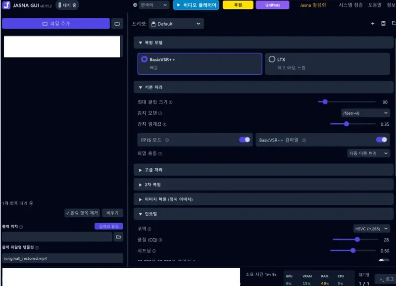
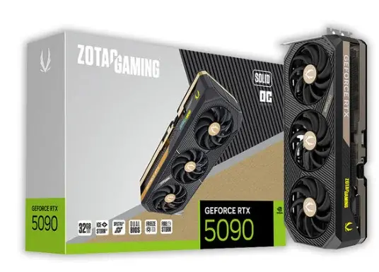
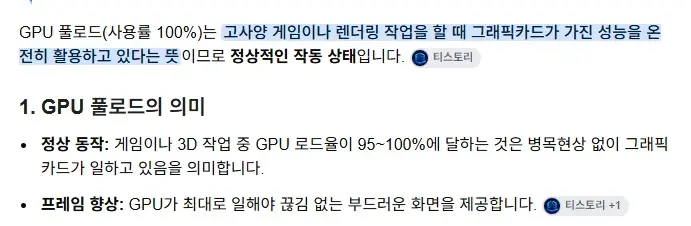

일본 AV나 원하는 영상의 모자이크 부분 통째로 재생성 합니다다. 샘플 본 사람들 의견으로는 완전 무수정 이라고 ㄷㄷ


단점으로는 일반 그래픽카드로 도저히 안된다고 하는데최소 필요한 그래픽카드가 5090....
5090이하 그래픽 카드로 한다면
짧으면 15시간 길면 40시간도 걸린다고 합니다.
만약 RTX5080 쓰는 사람이 LTX 설정을 하고 작업을 시켰더니 고회질로 하면 40시간, 보통으로 하면 25시간 걸린다고 합니다.
중국 따거들이 유명했던 품번 위주로
작업하고 있다는 이야기가 있음(최근 모파작 퀄 보면 그럴듯한 소문인듯합니다)
요약
1. 모자이크 파괴 프로그램 최소 그래픽 5090 필요
2. 사실상 95% 노모수준
보지란 무엇일까..